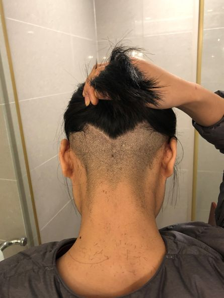
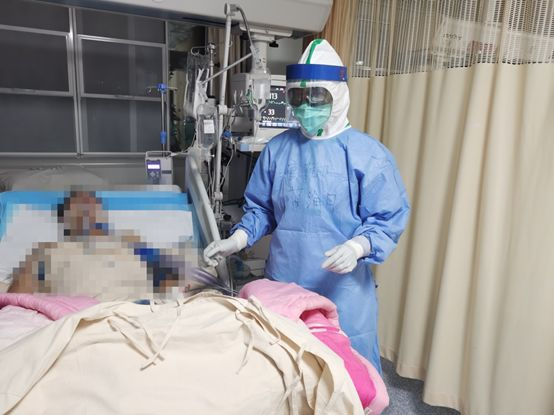

我们这些被强制隔离的湖北人
原文链接 备份链接 “ 整个酒店很安静，每到饭点有穿防护服的工作人员，推着小车，拍响房门，回荡在走廊里的“开饭啦！” —全民故事计划的第438个故事 — 一 “嗯，我刚下火车，马上就到单位公寓了；顺利顺利，你们也照顾好自己，千万不要出门； …
通讯员 丛墨涵 王永涛 澎湃新闻记者 陈雷柱
整理物资、房间消杀……空军军医大学唐都医院传染科护士蔺海月奔忙在防疫第一线，忙得不可开交。1994年出生的她面带稚气，干起活来却老练利索、井井有条。今年正月初十，原本是她订婚的日子，为奔赴抗疫一线，蔺海月推迟了订婚。情人节前夕，身在湖北武汉的蔺海月被提到男友时宛然一笑：未来的好日子还多着呢，等我回来就订婚！
1月24日凌晨4点多，一直在传染科发热门诊工作的蔺海月接到了要求支援武汉的电话。来不及跟男友及家人说声对不起，她毅然投入“战疫”。
对此，其男友罗雪峰十分理解。他与蔺海月告别时说：“你做什么决定我都支持你，等你战胜疫情归来，我为你骄傲。”

蔺海月与男友罗雪峰。本文图均为唐都医院供图
“非典那年，尽管我才9岁，但白衣天使紧急救援的身影，一直让我感动不已。”蔺海月说，这也是她走上护理岗位的动力，虽然是一名普通护士，但也会尽自己最大努力，去保护自己可以保护的人。
为了降低病毒感染几率，方便穿脱防护服，爱美的蔺海月抵达武汉后剪掉了长发。原本还想剃个光头的她挣扎了一番后放弃了这个想法，她俏皮地说：“我脸大，头发全剃太丑了，就偷偷地把后面（的头发）全给推掉了。”

蔺海月抵达武汉后剪了短发。
卸下“红妆”、剪去长发、推迟订婚，逆向而行奔赴武汉。蔺海月穿上防护服，走进医院感染病区，和同事们一起奋战在抗“疫”前线，每日询问记录患者发热、呼吸、饮食等各项数据，为患者做基础护理、输液、测血糖、血气，还要记录每个人治疗需要注意的问题，为患者对抗疾病加油鼓劲。蔺海月总是觉得自己还能再多干一些。

蔺海月在护理病患。
一天，一名患者突然对蔺海月说：“小姑娘，你昨天鼓励我要加油，我现在感觉好多了。”
这名患者说，全副武装之下，她看不到蔺海月的脸，但蔺海月的声音给了她很大的信心。蔺海月说，那一刻，她心里暖暖的。战斗在疫情防控第一线，做自己应该做的事，每一句平凡的话语都能给予信心与力量。
“订婚虽然延期，但幸福没有延期。”情人节前，当被提及男友罗雪峰时，蔺海月笑着说：“打赢了这场‘战役’，未来的好日子多着呢。现在就想跟我男朋友罗雪峰喊个话，等我回来就订婚！”
戳这里进入
“全国新型冠状病毒感染病例实时地图”↓↓↓

本期编辑 周玉华
推荐阅读


原文链接 备份链接 “ 整个酒店很安静，每到饭点有穿防护服的工作人员，推着小车，拍响房门，回荡在走廊里的“开饭啦！” —全民故事计划的第438个故事 — 一 “嗯，我刚下火车，马上就到单位公寓了；顺利顺利，你们也照顾好自己，千万不要出门； …
原文链接 备份链接 图片来源：同济大学附属东方医院 记者：刘素楠 编辑：徐菲 “ 大多数病人都比较稳定，多数患者只需药物治疗甚至可以不服药物。 ” 2月9日下午2点至次日凌晨，武汉客厅方舱医院B区来了百余位患者。他们一批批从大巴上下来，进 …
原文链接 备份链接 伴随着火神山、雷神山医院开始收治病人，15家方舱医院陆续启动， 各省医疗队开赴武汉，武汉所有确诊患者与疑似病例都将“应收尽收”。 在人类抗击疫病的历史上，“武汉会战”已成为一场史无前例的超级行动 图/新华、中新 武汉 …
原文链接 备份链接 实习生 于洋 澎湃新闻记者 赵思维 2月5日晚，湖北武汉洪山体育馆改造的武昌方舱医院开始接收首批新冠肺炎轻症患者。至11日8时，武昌方舱医院先后投入120名医生、400名护士的医护力量，目前仍有437位轻症患者在接受治 …
原文链接 备份链接 司机停下车来思忖着说，怎么给导到这里来了？ 那是一条土路，树在旁边矗立着。春天还没到来，它的叶子还没长出来。 “前方800米左转，500米后再左转”，导航里的声音软糯着。 金银潭医院是此次行程的目的地。这是武汉市最大的 …